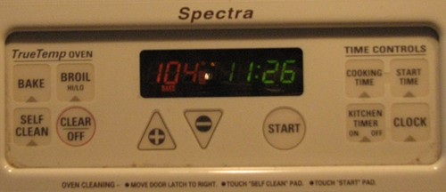

Keith Lehrer offers the following case in his Theory of Knowledge (1990).
Suppose a person, whom we shall name Mr. Truetemp, undergoes brain surgery by an experimental surgeon who invents a small device which is both a very accurate thermometer and a computational device capable of generating thoughts. The device, call it a tempucomp, is implanted in Truetemp’s head so that the very tip of the device, no larger than the head of a pin, sits unnoticed on his scalp and acts as a sensor to transmit information about the temperature to the computational system of his brain. This device, in turn, sends a message to his brain causing him to think of the temperature recorded by the external sensor. Assume that the tempucomp is very reliable, and so his thoughts are correct temperature thoughts. All told, this is a reliable belief-forming process. Now imagine, finally, that he has no idea that the tempucomp has been inserted in his brain, is only slightly puzzled about why he thinks so obsessively about the temperature, but never checks a thermometer to determine whether these thoughts about the temperature are correct. He accepts them unreflectively, another effect of the tempucomp. Thus, he thinks and accepts that the temperature is 104 degrees. It is. Does he know that it is?
Lehrer proposes that the natural intuition or judgment here is that Mr. Truetemp doesn’t know the temperature. But according to certain theories of knowledge, he does know it. So much the worse for those theories, says Lehrer.
No matter what you think about the case of Mr. Truetemp, there’s something you ought to know. “TrueTemp” is the name of Lehrer's oven.

Note that the oven isn’t merely incidental to the origin of the case. That is, “TrueTemp” isn’t merely the inspiration for Mr. Truetemp’s name. Lehrer thinks that Mr. Truetemp knows as much about the temperature as his oven knows.